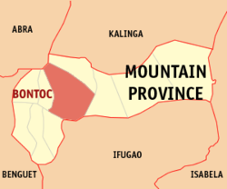
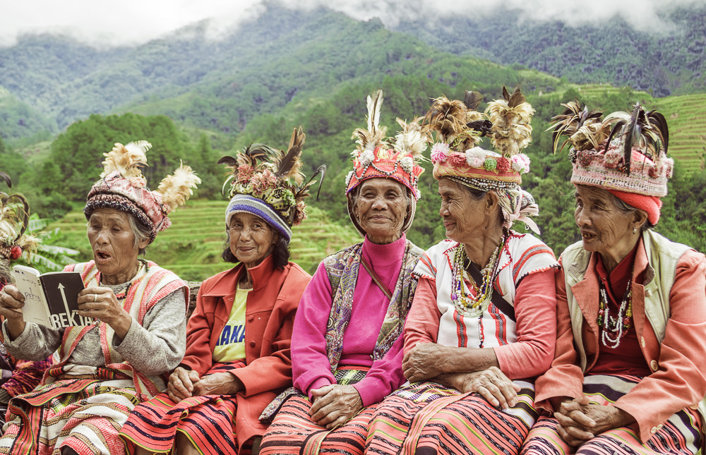

<!DOCTYPE html>
<html>
<meta charset="UTF-8">
<meta http-equiv="X-UA-Compatible" content="IE=edge">
<meta name="viewport" content="width=device-width, initial-scale= 1.0">
<link rel="stylesheet" href="Mt.Province.css">
<title>YCordillera</title>  </html>
<header class="header">
  <a href="#" class="logo">YCORDILLERA AK</a>
  <nav class="navbar">
    <a href="Jacob_Website.html">Home</a>
    <a href="Jacob_Websiteabout.html" onclick="return confirm('Info about the website not the creator')" >About </a>
    <a href="Jacob_Websitecontacts.html">Contact</a>
    <button class="button"><a href="WebsiteSignin.html">Sign in</a></button>
    <button class="button"><a href="WebsiteSignup.html">Sign up</a></button>
  </nav>
</header>
<body>
    
    <p class="homedesc1">
        Mountain Province is a landlocked province of the Philippines in the Cordillera Administrative Region in Luzon. 
        Its capital is Bontoc.It was formerly referred to as Mountain in some foreign references.
        The name is also incorrectly shortened by locals to Mt. Province, which in 
        turn is read by native Anglophones as "Mount Province". The province was named so 
        for being in the Cordillera Central mountain range found in the uppe
    </p>
    <p class="homedesc2">
        Mountain Province is tagged as "Weaver's Paradise" because of the different weaving centers 
        that create unique designs which indicate the province's cultural heritage. Various woven materials like 
        knapsacks, bags, purses, placemats, linen, belts, blankets and native costumes are being made in these different 
        weaving houses.
    </p>
</body>
<body>
    
    <p class="homedesc3">What is the traditional clothes of Mountain Province?The men wear long strips of handwoven loin cloth called “wanes”.
         The woman wear a kind of wrap-around skirt called “lufid”. This attire is used by the tribes in Mountain Province
          of The Cordillera ranges, called Igorots
    </p>
    <p class="homedesc4">
        Cultural elements common to the Igorot peoples as a whole include metalworking in iron and brass, weaving,
         and animal sacrifice. 
        They believe in spirits, including those of ancestors, and have complex rituals to propitiate them.  
    </p>
    <p class="homedesc5">
        What dialect is spoken in Mountain Province? Spoken in Bontoc municipality, Mountain Province 
        (in Bontoc ili, Caluttit, Dalican, Guina-ang, Ma-init, Maligcong, Samoki, and Tocucan villages). 
     Dialects are Khinina-ang, Finontok, Sinamoki, Jinallik, Minaligkhong and Tinokukan.
    </p>
</body>
<footer>
    jacobivanfranzrandall@gmail.com . All rights Reserved
  </footer>